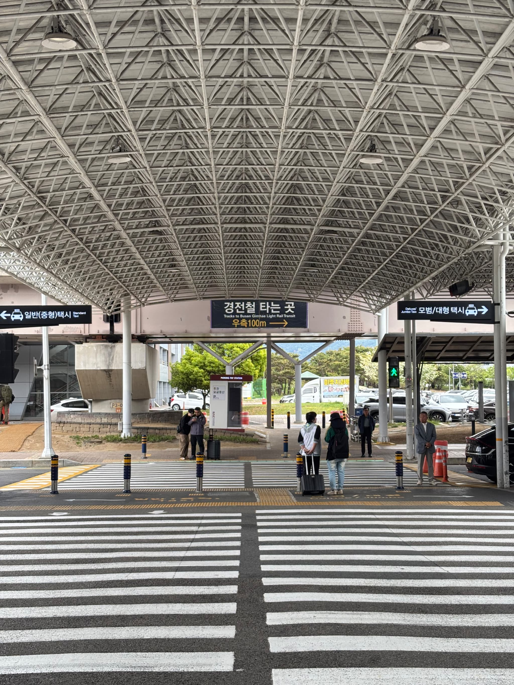
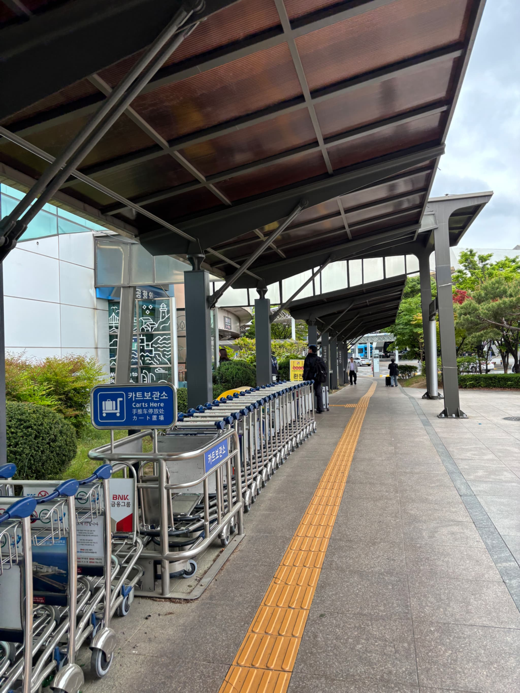
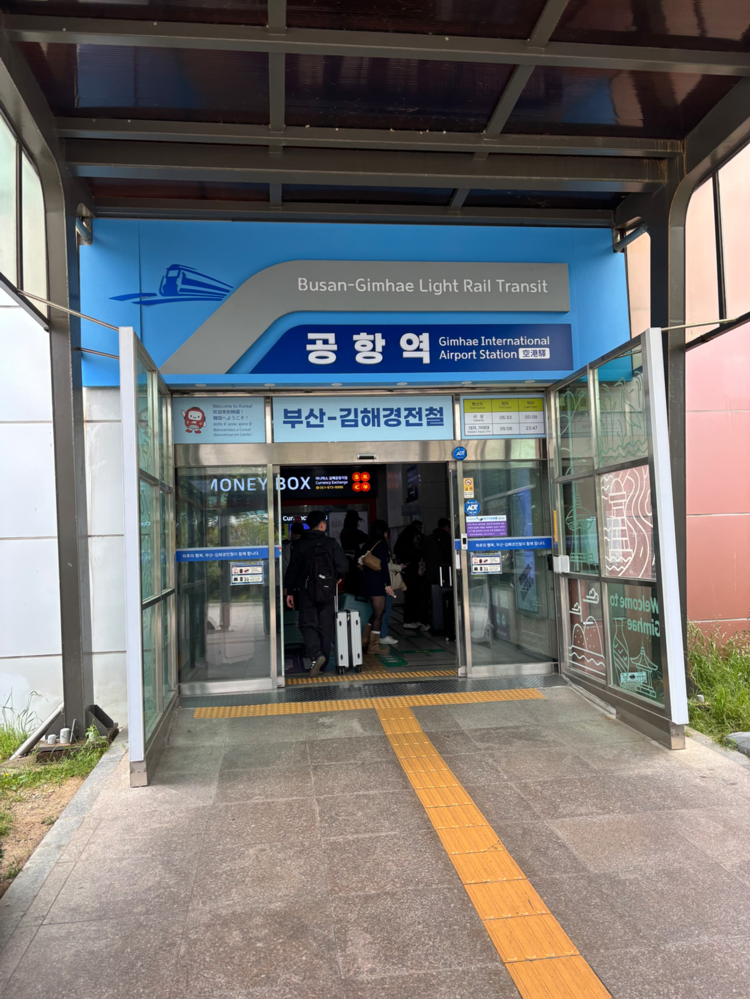

🗺️ 観光マップ
金海のおすすめスポットをまとめました❣️
おすすめスポットmapへGo🎶
💬 フレーズ集
よく使う韓国語をカテゴリごとにまとめました。
✈️ 空港
こんにちは
안녕하세요
アンニョンハセヨ
入国審査はどこですか？
입국 심사는 어디예요?
イプグク シムサヌン オディエヨ？
荷物を受け取りたいです
짐을 찾고 싶어요
チムル チャッコ シポヨ
🏨 ホテル
チェックインお願いします
체크인 부탁드립니다
チェクイン プタットゥリムニダ
Wi-Fiはありますか？
와이파이 있어요?
ワイパイ イッソヨ？
チェックアウトします
체크아웃 하겠습니다
チェクアウッ ハゲッスムニダ
🍴 レストラン
2人です
두 명이에요
トゥ ミョンイエヨ
おすすめは何ですか？
추천 메뉴가 뭐예요?
チュチョン メニュガ ムォエヨ？
お会計お願いします
계산 부탁드립니다
ケサン プタットゥリムニダ
☕ カフェ
店内で飲みます
매장에서 먹을게요
メジャンエソ モグルケヨ
持ち帰ります
포장해주세요
ポジャンヘジュセヨ
🛍️ ショッピング
これをください
이거 주세요
イゴ ジュセヨ
試着できますか？
입어봐도 될까요?
イボバド テルカヨ？
🚕 タクシー
ここまでお願いします
여기까지 부탁합니다
ヨギカジ プタカムニダ
カードで払えますか？
카드 돼요?
カドゥ デヨ？
🚨 緊急時
助けてください
도와주세요
トワジュセヨ
日本語を話せますか？
일본어 할 수 있어요?
イルボノ ハル ス イッソヨ？
🇰🇷 韓国豆知識
韓国旅行中に役立つ（かもしれない）情報ですℹ️
🌶 辛いもの
韓国といえば辛い食事。
ワタシ辛いのは苦手だから、赤い食べ物を避けよう…というのは甘い！
一番辛いのは緑の唐辛子、チョンニャンゴチュ🔥
要注意です。
☕️ カフェにて
何を頼めばいいかわからない…💦
そんな時は、【Signature】を頼めば間違いなし！
メニューに書いてあることが多いですし、
「シグニチャー ガ モエヨ？」でも伝わります！
🍽 飲食店にて
カトラリーが卓上にない時は、机に引き出しが付いていることが多いです！ おかずは無料で提供されることが結構多い💕
航空会社のこと
完全個人の見解ですが、
以下の航空会社は避けがちです💦
🍑ピーチ
理由：預け荷物がついてなくて追加料金かかる
🐣イースター航空
理由：機内放送がほぼ韓国語
✈️東京からの飛行機のこと
東京から来られる場合の移動費ですが、
新幹線で大阪に移動し、大阪から釜山に出入りする
東京🚅大阪✈️韓国の方が3万ほど安い💰
こちらの方が時間は掛かりますが、移動経路の候補にしてみてください！
🇯🇵▶️🇰🇷の機内にて
📍ドキドキポイント：
機内にて、ベルト着用サインが消えた頃、
CAさんがハガキサイズの紙を配布します。
え、この紙なに…⁉️もらうヤツ…⁉️
🌟入国申請をオンライン申請済みの場合
▶︎受け取らなくてOK。入国審査のとき、ハガキサイズの紙出して、みたいな張り紙してあるけど、スルーでOK。パスポートに紐付いてるから、パスポートだけで大丈夫
🌟未申請の場合
▶︎受け取って、必要事項を英語が韓国語で記入してください！ちなみに「会社員」の綴りはemployee、です（笑）
🇯🇵▶️🇰🇷入国審査にて
📍ご注意ポイント：
金海の入国審査は、1時間かかることも…
キチキチのプランニングはご注意ください💦
💳 T-money
電車・バス・コンビニなどで利用できる
韓国の交通系ICカードです。
慣れない外貨の小銭はなかなか戸惑うので、交通系が1枚あると結構楽かも…！
コンビニでチャージして利用できます。
💳 クレジットカード
VISA・Mastercardはほとんどのお店で 利用できます。 韓国はかなりキャッシュレス進んでいます！
🚻 トイレ
地下鉄駅・百貨店・大型商業施設には
無料トイレがあります。
コンビニでは借りれないのでご注意を！
また、ペーパーがないところもちらほら…
ポケットティッシュを必ず携帯してください！
📶 Wi-Fi
カフェ・ホテル・空港では
無料Wi-Fiが利用できる場所が多いです！
日本も進めばいいのに〜〜
🔌 電源
韓国は220V・CタイプまたはSEタイプの コンセントが一般的です。 一回、日本の延長コードを持って行って、 小爆発させたことがあります。どうか同じ失敗をせぬよう…！
🚇 交通
韓国での移動方法をまとめました。
🚇 軽電車
金海空港に到着したら、モノレールのような2,3両編成の
可愛い電車（Light Rail Transit）で移動します。
預け荷物を受け取って再入場禁止の自動ドアを通ったら、
Gate3と書かれた自動ドアから外へ出ます。

外に出ると、目の前に横断歩道が。
横断歩道を渡りきったところで右折。

そのまま点字プロックにそって100m弱歩きます。
途中の枝分かれでは、左斜め方向に曲がってください！

左手に駅の入り口が見えます🎶


釜山（西面）に観光に行く場合は、改札入って左手の「沙上」方面へ、
ウェディングホール側に行く時は右手の「伽耶大学校」方面へ！

🚌 バス
市内バスはT-moneyで乗車できます。 降車時もカードをタッチしましょう！ 座る前に発車が当たり前と思ってください！！ しっかり掴まって！！！
🚕 タクシー
日本よりもかな〜りお安いタクシー料金。 NAVER MapやKakao Tを利用すると便利です。
📱 地図アプリ
Google Mapsよりも NAVER Mapの方が 正確なルート検索ができます。
🚨 困ったとき
緊急時は、迷わず山岡までご連絡ください。
🚓 警察
緊急通報： 112
🚑 救急・消防
緊急通報： 119
🌐 翻訳アプリ
こちらより👇翻訳アプリ🦜パパゴ🦜に飛べます。 🇯🇵⇄🇰🇷 韓国語翻訳・通訳
🛂 パスポート紛失
最寄りの警察署で紛失届を提出し、 日本国総領事館へ連絡してください。
🇯🇵 日本国総領事館
パスポート・事故・事件などの相談ができます。
📍住所：釜山広域市東区古館路 18
（부산광역시 동구 고관로 18）
☎️電話番号：+82-51-465-5104